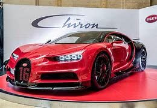

Bugatti Automobiles S.A.S é uma marca de automóveis fundada por Ettore Bugatti em 1909, com sede na cidade francesa de Molsheim, na Alsácia.[1] Depois de muitos altos e baixos, ela passou para o controle italiano em 1982, com sede em Módena, onde foram montadas 150 unidades do modelo EB 110.[1] Mas a aventura durou pouco e em 1995 a marca entrou em falência. Em 1998 os direitos sobre a Bugatti foram adquiridos pelo Grupo Volkswagen. A Bugatti até a data é presidida por Franz-Josef Paefgen e tem apenas apresentado como superdesportivo três modelos, o já referido EB 110, o Bugatti Veyron com 3 versões Veyron 16.4, Veyron 16.4 Grand Sport (conversível) e o Veyron 16.4 Super Sport (Top). Existe ainda um protótipo de 4 lugares chamado Galibier.
Bugatti Veyron,
Bugatti Chiron,
Bugatti Divo,
Bugatti La Voiture Noire.
Um dos seus modelos, o T35 (Tipo 35), iniciado em 1924, é considerado o maior vencedor de corridas de todos os tempos, atribuindo-se-lhe 1850 vitórias em competições.

“Com o Chiron Super Sport seguimos a nossa longa tradição de combinar a velocidade máxima com o luxo absoluto”: é assim que Stephan Winkelmann apresenta o novo Bugatti.
As palavras do presidente da Bugatti são a síntese de lançamento de tudo o que vai ser revelado sobre o novo hipercarro da histórica marca francesa de ascendência italiana. Estamos perante a elevação do “conforto” e da “elegância” aliados à elevação da “performance” e das “altas velocidades”.
O Bugatti Chiron Super Sport apresenta-se como o outro lado da performance que complementa a essência de grand tourer de ponta que é o Chiron. Se o Pur Sport foi criado a pensar na agilidade lateral e desempenho em curva, o Super Sport foi desenhado para a velocidade, “a cada centímetro”, do splitter dianteiro ao difusor traseiro.
As forças ascendentes exercidas no carro a velocidades na ordem dos “440 km/h” são imensas e o trabalho dos engenheiros tem como preocupação central equilibrar a pressão aerodinâmica necessária com a redução do efeito de arrasto. Ou seja, como refere o vice-diretor de design da Bugatti, Frank Heyl, foi combinar eficiência com estilo.
“O nosso objetivo foi dar ao veículo uma configuração neutra à sua velocidade máxima numa forma tão ágil quanto possível. O processo de design foi assim em particular sobre como atingir a eficiência aerodinâmica.”
O exemplo deste estilo aerodinâmico está bem presente no comprimento da sua (longa) traseira crescida em 25 cm, com um difusor alargado que levou a uma nova configuração do sistema de escape: os tubos deixam de estar ao centro e passam a estar nos lados numa posição vertical de cada par.
O elaborado design passa por elementos – que não são pormenores – como cortinas laterais a direcionar o ar das entradas frontais para as cavas das rodas e o mais junto possível à lateral do carro, ou como os nove orifícios de saída de ar acima dos para-lamas libertando pressão atmosférica do eixo dianteiro e conferindo-lhe também downforce.
Chiron Super Sport Para o coração do novo hipercarro, a Bugatti exponenciou o icónico motor de 8,0 litros W16 quadriturbo em 100 cv para os 1.600 cv de potência aumentando também as rotações (mais 300) para as 7.100 rpm, com um binário máximo de 1.600 Nm.
Com turbocompressores maiores e uma redução de peso de 23 kg, o Super Sport eleva a performance da gama Chiron para níveis ainda mais impressionantes. A aceleração dos 0 aos 200 km/h faz-se em 5.8 segundos e os 0-300 km/h em 12.1 segundos. O máximo rendimento trabalhado pela transmissão de dupla embraiagem de 7 velocidades regista-se na passagem a sexta para a sétima velocidade aos 403 km/h...
Para a condução a tão altas velocidades, a Bugatti também desenvolveu para o Chiron Super Sport um novo chassi com mais rigidez garantida pelos sistemas de direção e amortecimento para mais precisão, suavidade dos movimentos e estabilidade na condução proporcionada por quatro programas: EB, Handling, Autobahn e Top Speed.
O último capítulo deste novo hipercarro que não pode deixar de ser destacado está nos pneus que equipam as já mencionadas jantes. Os Michelin Super Sport Cup 2 foram otimizados para o Chiron Super Sport sendo “os únicos pneus que rolam consistentemente até 500 km/h”.